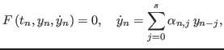
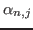

As the number of cores increases on current and future architectures, the natural sequential approach to time integration is becoming a more serious bottleneck for achieving high scalability. One alternative to overcome this problem is the use of multigrid-in-time algorithms such as MGRIT [1]. Although first designed for one-step methods, we apply the MGRIT algorithm to multistep BDF methods for the integration of fully implicit Differential Algebraic Equations (DAE) on variable timestep grids. Our step function solves the nonlinear problem
 |
(1) |

depend on the order and the previous timestep sizes. We will present one approach for implementing variable stepsize BDF methods in a parallel-in-time context based on the XBraid software library. Results on power grid applications will also be given.